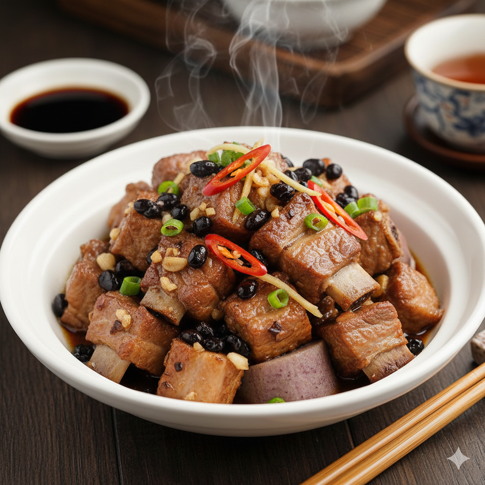

Steamed Ribs
Home
Link to my github

Steamed chinese ribs served with blackbeans.
A simple and delicious Cantonese dish.
Ingredients
- Pork ribs - 200g
- Chilli - 2
- Galic - 1 clove
- Soy sauce - 1 tablespoon
- Shaosing wine - 1 tablespoon
- Salt - 1 tea spoon
- Sugar - 2 tea spoons
- Corn starch - 2 tablespoons
- White pepper - 1 tea spoon
- Fermented blackbeans - 2 tablespoons
Instructions
- Slice the chilli and mince the garlic clove, place into a mixing bowl.
- Add the soy sauce, Shaosing wine, salt, sugar, corn starch, white pepper and fermented blackbeans into the mixing bowl.
- Cut the pork ribs into bite sized pieces, small enough to pick up with a pair of chopsticks. Put the pieces into the mixing bowl with the rest of the ingredients
- Mix together until the rib pieces are all coated, then transfer the content into a dish small enough to fit into a steamer.
- Steam the ribs for 10 minutes then serve!